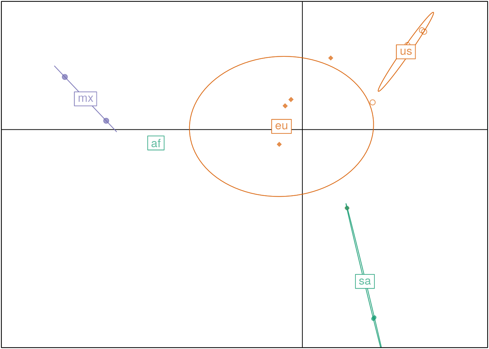
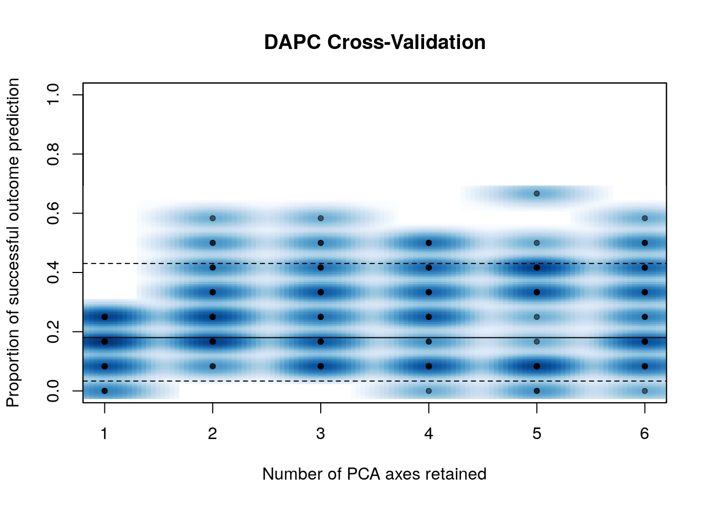
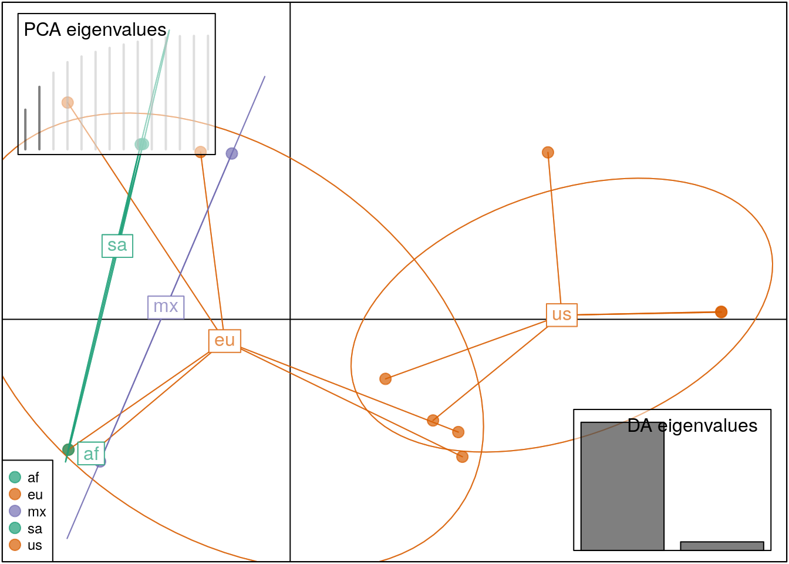

Discriminant analysis of principal components (DAPC)
- Reorganize DAPC plots
- Explain cross-validation plots
- Explain in detail what a DAPC plot show
Another way of determining if the geographic populations are clustered is to use a discriminant analysis of principal components (DAPC). DAPC is a multivariate statistical approach that uses groups defined a priori to maximize among group variance and minimize within group variance. DAPC is explained in depth in the DAPC chapter on Part II of this tutorial or on the DAPC adegenet vignette.
The DAPC function is designed to work with genlight object with popluations defined a priori. For this excercise we will use the genlight object with all the SNP’s.
First, we will remove the P. mirabilis sample to allow us to focus on how the P. infestans samples group.
set.seed(1234)
x <- popsub(x, blacklist = "Pmir")
dapc.x <- dapc(x, pop = pop(x), n.pca=10, n.da = 2)
scatter(dapc.x, scree.da=FALSE, bg="white", pch=17:22, cstar=0, col=cols)
scatter(dapc.x, col = cols, cex = 2, legend = TRUE, clabel = F, posi.leg = "bottomleft", scree.pca = TRUE,
posi.pca = "topleft", cleg = 0.75)
This figure doesn’t allow us to see any particular pattern, that why we use cross-validation. Very generally, cross-validation will objectivelly optimize the best trade-off point between retaining too many or too few PC’s for our model. The DAPC chapter on Part II of this tutorial explains why cross-validation is important. We need a genclone/genind object for this: the x.gc.popsub object. This object is a genclone object without the P. mirabilis sample:
mat <- as.matrix(x)
grp <- pop(x)
xval <- xvalDapc(mat, grp, n.rep = 30, n.pca = c(1:10))## Warning in xvalDapc.matrix(mat, grp, n.rep = 30, n.pca = c(1:10)): 1
## group has only 1 member so it cannot be represented in both training and
## validation sets.
The cross-validation shows that 5 PC is the ideal point of correctly predicted subsamples with the lowest error. we can plot the cross-validation DAPC results:
set.seed(12345)
scatter(xval$DAPC, col = cols, cex = 2, legend = TRUE, clabel = TRUE, posi.leg = "bottomleft", scree.pca = TRUE,
posi.pca = "topleft", cleg = 0.75)
The DAPC plot shows what we’ve found using all the other methods until now: There is no population aggrupation between the geographic locations of samples of P. infestans
Javier’s Opinion: This excercise is very long without all the other topics. We should discuss what we want for the workshop vs what we want for the book.